入口 / 媒体
[ 媒体 ]
媒体ごとに引く
Google 広告を中心に、Meta・LINEヤフー・ChatGPT の広告の知識を足しています。どの媒体も「Google との違い」から読むと早いです。中身は知識ベースから自動で作るので、足されたら作り直すと増えます。
図
図で見る: 4 媒体を比べる
Google・Meta・LINEヤフー・ChatGPT で、同じ言葉でも中身が違う所を 4 枚で比べます。下に媒体ごとの図の一覧があります。

Google は検索語句、Meta は人（見ている人の中からオーディエンス条件の範囲で配信システムが選ぶ）、LINEヤフーは検索なら検索語句・ディスプレイなら人と文脈、ChatGPT は会話の文脈と意図で広告が出る。Meta には検索語句が、ChatGPT にはキーワードが無く、ChatGPT の文脈ヒント（広告グループあたり最大 2,000）は完全一致のキーワードではなく配信も保証しないので、「この語で出す・外す」の設計は Google と LINEヤフーの検索でしかできない。
出典: Google 90§3-1・R-語句-007・Meta 00§1（S-41） ほか 6 件 · 2026-11-18 時点
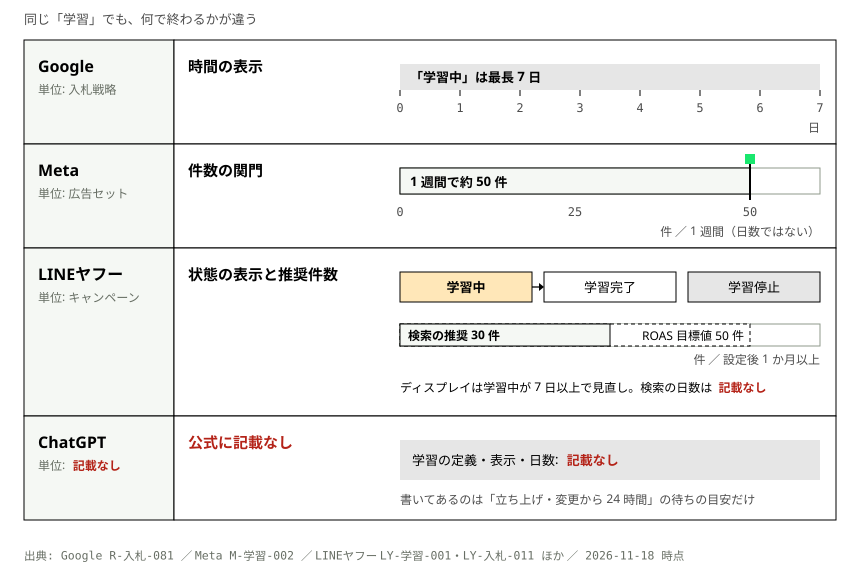
Google の「学習中」は最長 7 日で終わる時間の表示、Meta の情報収集期間は 1 週間で約 50 件に届くと抜ける件数の関門、LINEヤフーは学習中・学習完了・学習停止の表示と推奨件数（検索は設定後 1 か月以上で 30 件、ROAS 目標値は 50 件）、ChatGPT は公式に学習の記載が無い。比べるときは、何の単位（入札戦略・広告セット・キャンペーン）で何で終わるか（日数・件数・表示）をそろえてから読む。
出典: R-入札-081（Google）・M-学習-002・M-学習-005 ほか 9 件 · 2026-11-18 時点

1 日の上振れの幅と、ならす期間（月か週か）を同じ物差しの棒で並べた。媒体をまたいで日予算を組むとき、予算の見張りの上限と月末の締めの読み方をそろえるのに使う。
出典: Google広告の基礎/02 §6・M-予算-004・LY-予算-012 ほか 7 件 · 2026-11-18 時点
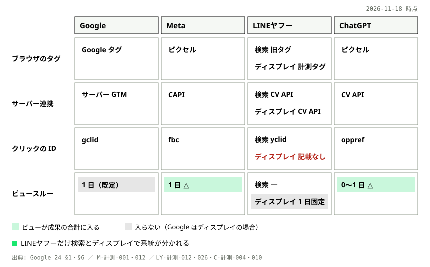
4 媒体の計測を、タグ・サーバー連携・クリックの ID・ビュースルーの 4 つの部品で並べた。GTM で何を入れるか、リダイレクトで落としてはいけない ID はどれか、成果の合計にビューが入るかを媒体ごとに確かめるのに使う。
出典: Google広告の基礎/24 §1・§6・M-計測-001・LY-計測-026 ほか 14 件 · 2026-11-18 時点

使えない規則の多さは、検索語句・キーワードに依る規則が消える媒体（LINEヤフーのディスプレイ・ChatGPT）ほど大きい。そのままと言い換えの境目は数え方が媒体で違う（ChatGPT の言い換え 85 のうち 22 は ChatGPT 側の仕組みが公式に記載なしのまま代わりの手で埋めたもの）ので、比べるのは「使えない」の数を主にする。
出典: Meta広告の基礎/36 §2-1・LINEヤフー広告の基礎/36 §2-1・ChatGPT広告の基礎/36 §2-1 ほか 4 件 · 2026-11-18 時点

入稿の締め切りは LINEヤフーを最も早く置き（新規 3 営業日前後）、ChatGPT は時間の記載が無いので余裕を見る。承認済みの広告を直すとき、配信が止まらないと書いてあるのは LINEヤフーだけなので、ほかの媒体では予備の広告を残してから編集する。
出典: Google広告の基礎/34 §0（H:6327680・H:1722120・H:9338593）・M-ポリシー-001・M-ポリシー-004 ほか 15 件 · 2026-11-18 時点

切れずに出る目安を数字で示せるのは ChatGPT（日本の管理画面）だけで、Google・LINEヤフー・Meta は「場所が足りなければ短くする」としか書いていない。どの媒体でも、言いたいことは各文の前半に置き、必ず見せたい表記は固定の位置（Google の見出し 1・2／説明文 1、LINEヤフーのタイトル 1・2／説明文 1）か画像の中に入れる。
出典: Google広告の基礎/05 §1-1（7684791・9566341・148778）・M-アセット-011・M-アセット-018 ほか 15 件 · 2026-11-19 時点
Meta の仕組み（34 枚）
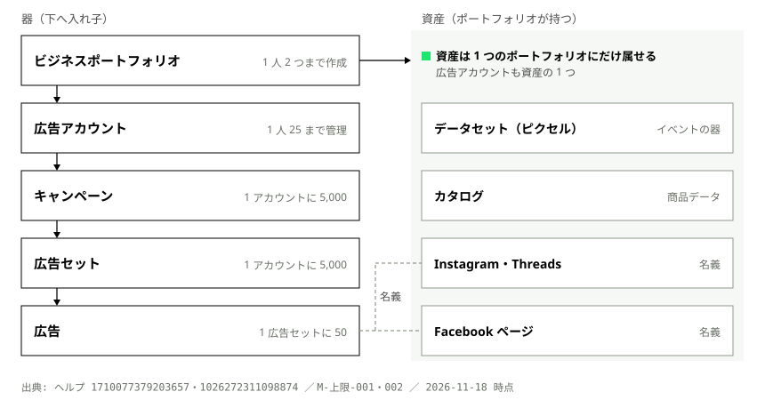
M01アカウントの器の階層 M023 つの層で何を決めるか
M023 つの層で何を決めるか M03情報収集期間の関門
M03情報収集期間の関門 M04編集の 3 区分
M04編集の 3 区分 M05入札戦略の地図
M05入札戦略の地図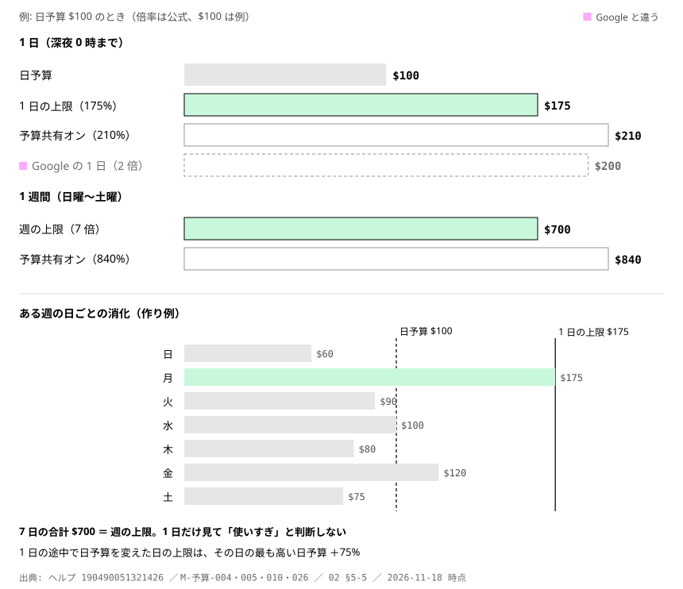
M06日予算の消化の幅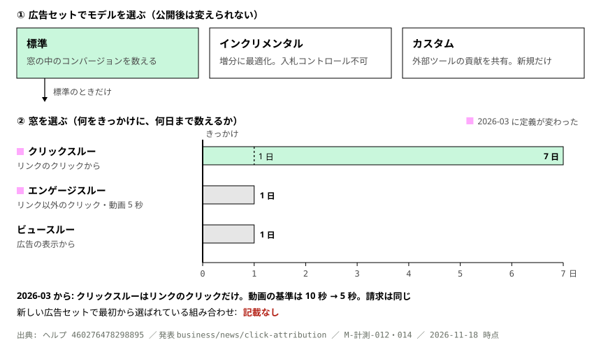
M07アトリビューションのモデルと窓 M08Advantage+ オーディエンスの制御と提案
M08Advantage+ オーディエンスの制御と提案 M09審査のやり直しになる編集
M09審査のやり直しになる編集 M10却下されたとき
M10却下されたとき M11オークションで勝つ広告
M11オークションで勝つ広告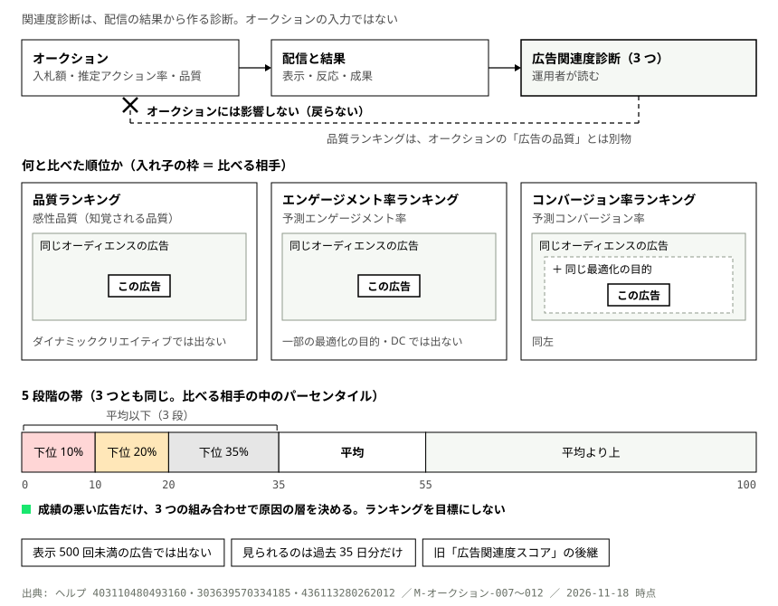
M12広告関連度診断の 3 つのランキング M13ピクセルとコンバージョン API の重複除外
M13ピクセルとコンバージョン API の重複除外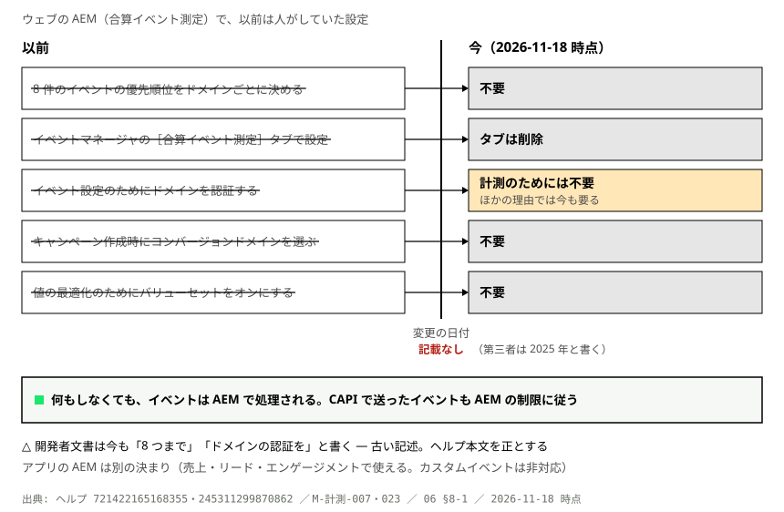
M14AEM の今と昔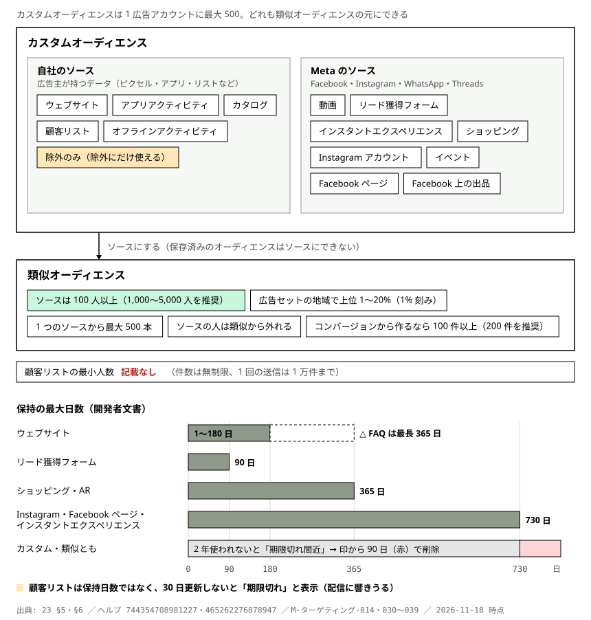
M15カスタムオーディエンスと類似オーディエンス M16効果測定の手段の選び方
M16効果測定の手段の選び方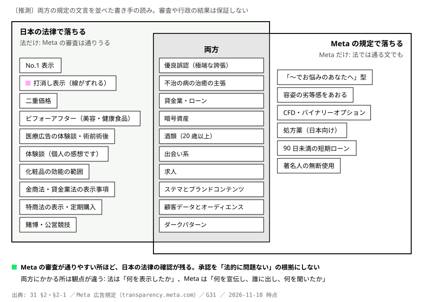
M17日本の法律と Meta の規定のどちらで落ちるか M18「国の一覧」で日本はどちらか
M18「国の一覧」で日本はどちらか M19点検の頻度（日次・週次・月次・四半期）
M19点検の頻度（日次・週次・月次・四半期）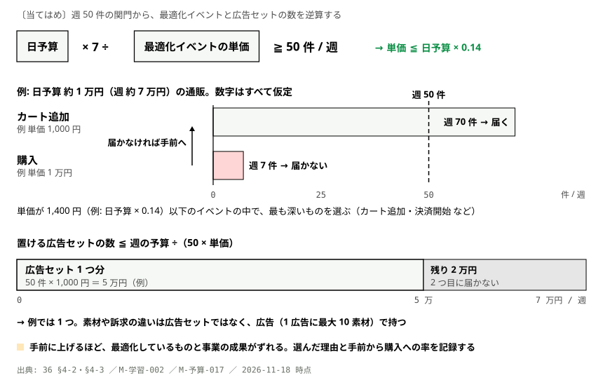
M20立ち上げの型〔当てはめ〕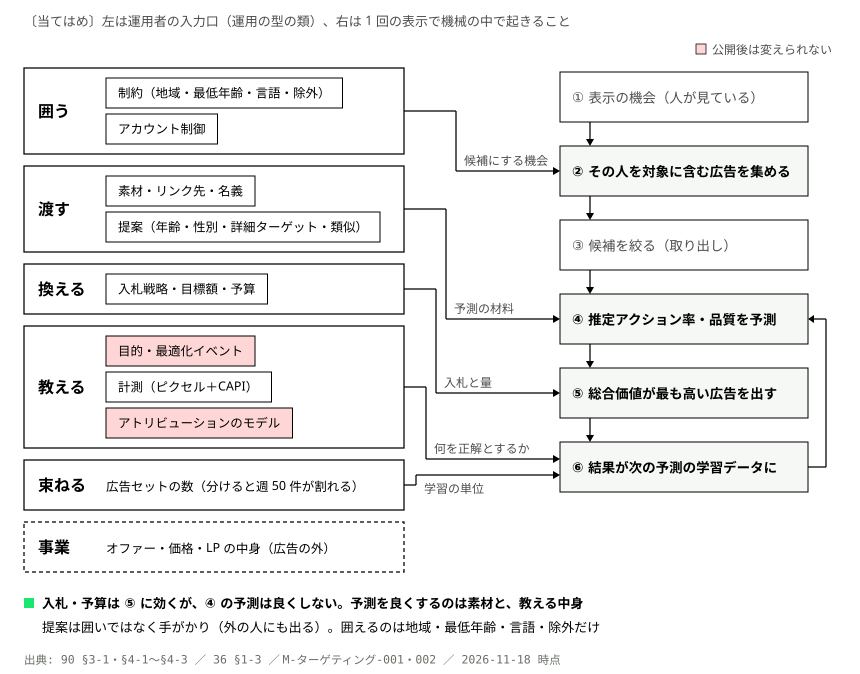
M21機械への入力口と効き先 M22管理画面の成果・増分の結果・リフトの違い
M22管理画面の成果・増分の結果・リフトの違い M23A/B テストとリフトの「信頼性」
M23A/B テストとリフトの「信頼性」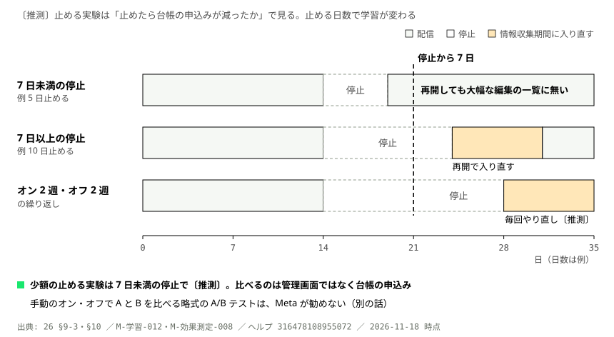
M24止める実験と「7 日」の境目 M25「出ない・高い」の切り分けの順
M25「出ない・高い」の切り分けの順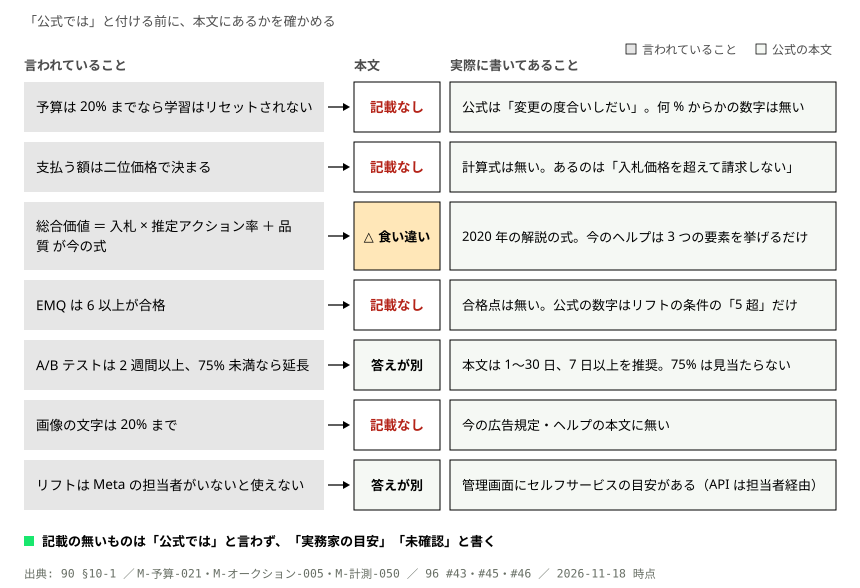
M26公式のように言われていることと本文 M27Google の常識と Meta の実際
M27Google の常識と Meta の実際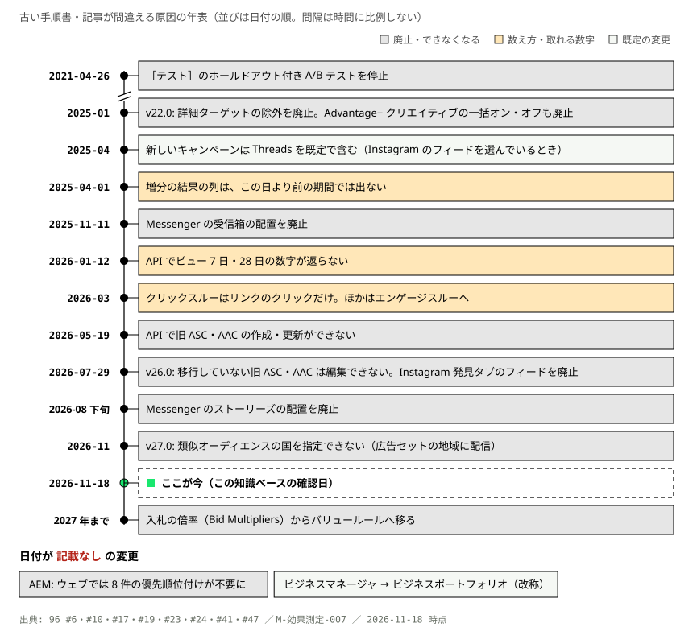
M28仕様の変更の年表（2021〜2027）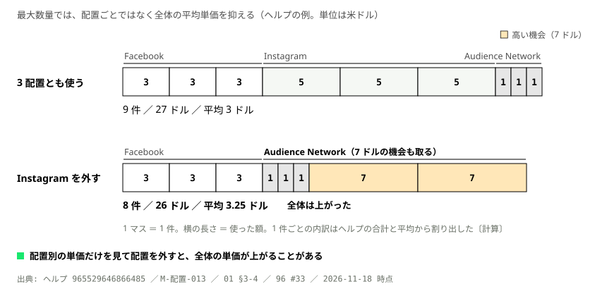
M29配置を外すと全体の単価が上がる例 M30広告が止まる上限と、請求だけの線
M30広告が止まる上限と、請求だけの線 M31オーディエンスの条件の置き場所
M31オーディエンスの条件の置き場所 M32特別な広告カテゴリの欄の埋め方
M32特別な広告カテゴリの欄の埋め方 M33個人の特性に触れる文の通る・落ちる
M33個人の特性に触れる文の通る・落ちる M34立ち上げの時間割〔当てはめ〕
M34立ち上げの時間割〔当てはめ〕LINEヤフー の仕組み（31 枚）
 L01LINEヤフー広告のサービスの地図（2026-11-18 時点）
L01LINEヤフー広告のサービスの地図（2026-11-18 時点） L02LINE 広告との統合の年表（2026-11-18 時点）
L02LINE 広告との統合の年表（2026-11-18 時点） L03LINEヤフー広告のタグの置き方（2026-11-18 時点）
L03LINEヤフー広告のタグの置き方（2026-11-18 時点） L04オークションランクと品質インデックス（検索広告）
L04オークションランクと品質インデックス（検索広告）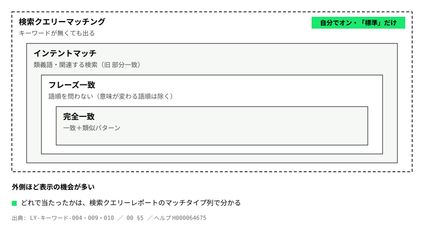
L05マッチタイプと検索クエリーマッチングの広がり L06予算と請求の上限（例: 1 日の予算 1 万円）
L06予算と請求の上限（例: 1 日の予算 1 万円） L07損失率（予算）の中身: LINEヤフーと Google の違い
L07損失率（予算）の中身: LINEヤフーと Google の違い L08承認済みの広告を編集したとき（LINEヤフー）
L08承認済みの広告を編集したとき（LINEヤフー）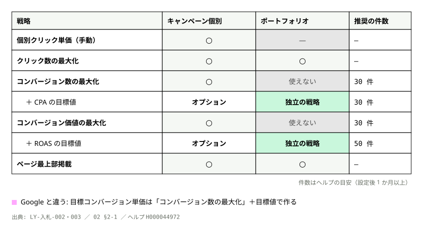
L09検索広告の入札戦略: キャンペーン個別とポートフォリオ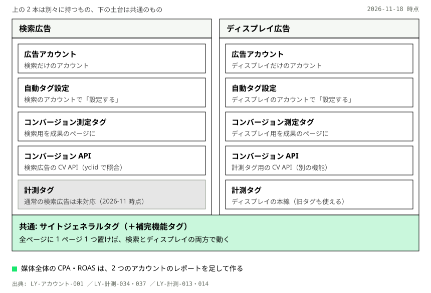
L10検索とディスプレイで別のもの・共通のもの（LINEヤフー）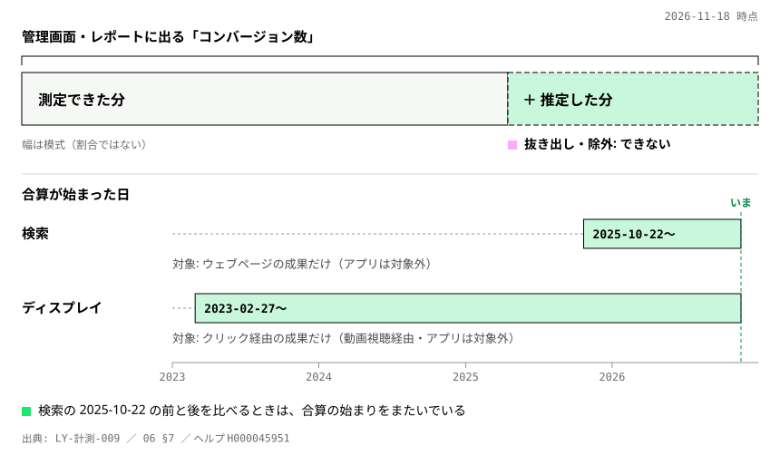
L11推定コンバージョンの合算（LINEヤフー） L12検索広告のコンバージョン API で送るもの（LINEヤフー）
L12検索広告のコンバージョン API で送るもの（LINEヤフー） L13ディスプレイ広告の配信面と絞り方（LINEヤフー、2026-11-18 時点）
L13ディスプレイ広告の配信面と絞り方（LINEヤフー、2026-11-18 時点） L14オーディエンスリストの種類と組み合わせ（LINEヤフー ディスプレイ）
L14オーディエンスリストの種類と組み合わせ（LINEヤフー ディスプレイ）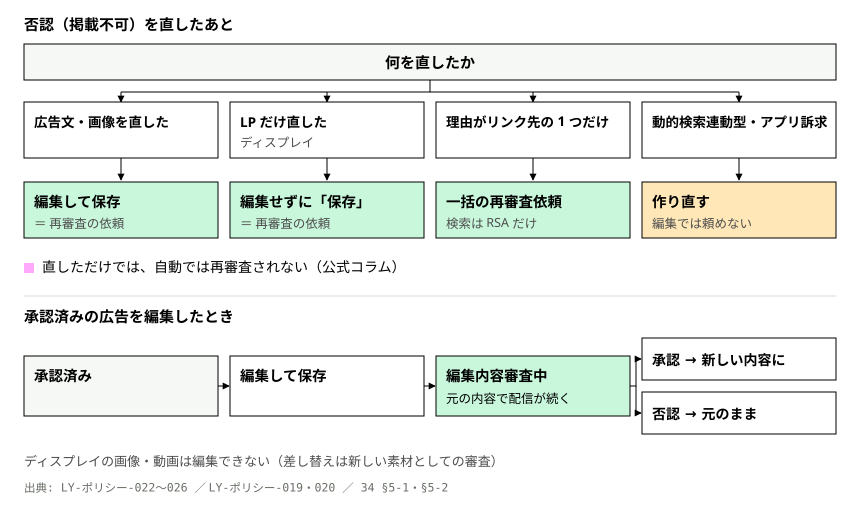
L15再審査の頼み方と、承認済みの広告の編集（LINEヤフー） L16広告文の表記のルール（LINEヤフー）
L16広告文の表記のルール（LINEヤフー） L17掲載基準と日本の法令のどちらで落ちるか（LINEヤフー）
L17掲載基準と日本の法令のどちらで落ちるか（LINEヤフー） L18運用の型の規則 175 個の当てはめ: 検索とディスプレイ（LINEヤフー）
L18運用の型の規則 175 個の当てはめ: 検索とディスプレイ（LINEヤフー）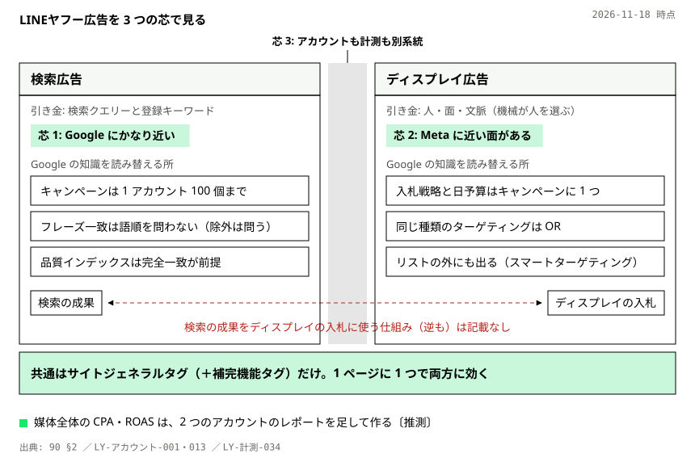
L19LINEヤフー広告を 3 つの芯で見る（2026-11-18 時点） L20同じ名前で中身が違うもの: 数字を読み違えやすい 7 つ（LINEヤフー）
L20同じ名前で中身が違うもの: 数字を読み違えやすい 7 つ（LINEヤフー） L21成果はどの日に数えられるか（LINEヤフー）
L21成果はどの日に数えられるか（LINEヤフー） L22Google の常識を持ち込むと間違える設定の 6 つ（LINEヤフー）
L22Google の常識を持ち込むと間違える設定の 6 つ（LINEヤフー）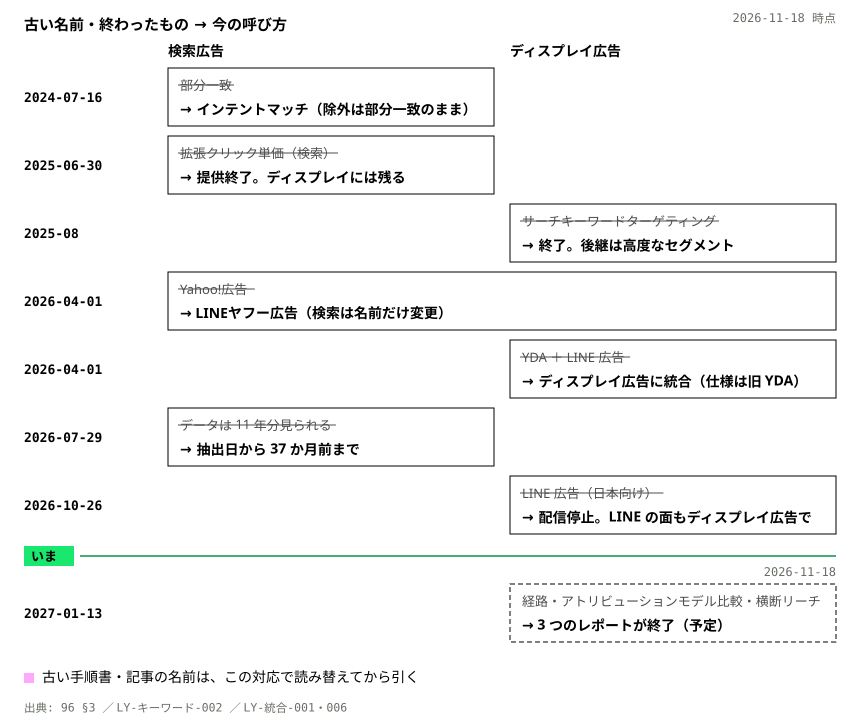
L23古い名前・終わったもの → 今の呼び方（LINEヤフー、2026-11-18 時点）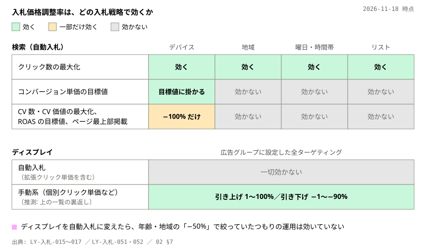
L24入札価格調整率は、どの入札戦略で効くか（LINEヤフー）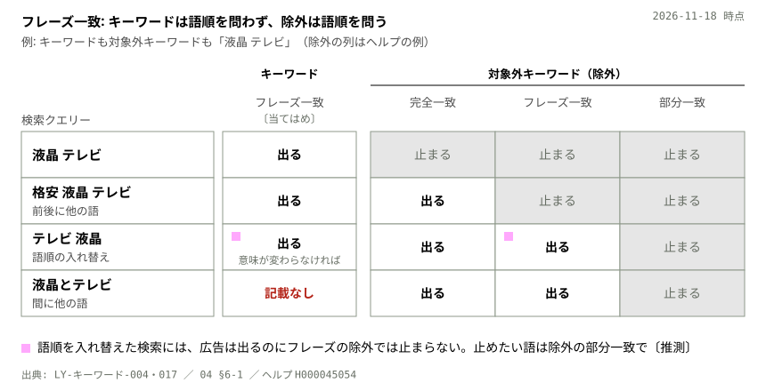
L25フレーズ一致: キーワードは語順を問わず、除外は語順を問う（LINEヤフー）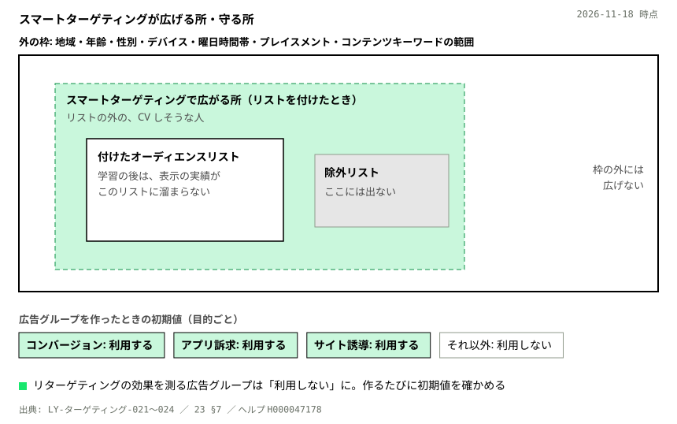
L26スマートターゲティングが広げる所・守る所（LINEヤフー ディスプレイ）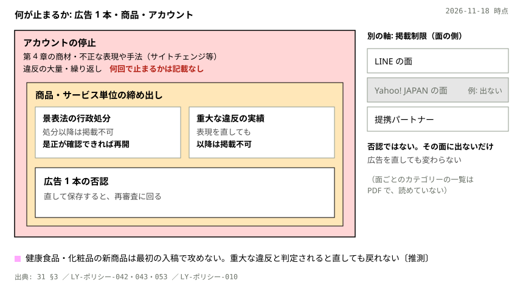
L27何が止まるか: 広告 1 本・商品・アカウント（LINEヤフー） L28年齢制限: 商品ごとに、出ない年齢がある（LINEヤフー）
L28年齢制限: 商品ごとに、出ない年齢がある（LINEヤフー） L29検索の「出ない・取れない」は上から順に外す（LINEヤフー、〔当てはめ〕）
L29検索の「出ない・取れない」は上から順に外す（LINEヤフー、〔当てはめ〕）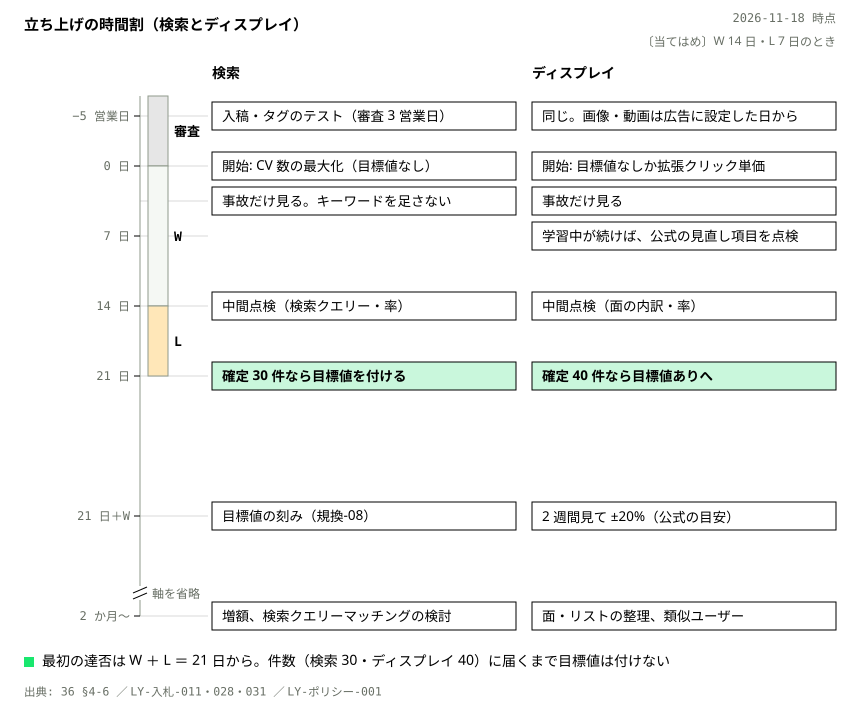
L30立ち上げの時間割（LINEヤフー、〔当てはめ〕） L31LINE 広告の移行ツールで移るもの・移らないもの（2026-11-18 時点）
L31LINE 広告の移行ツールで移るもの・移らないもの（2026-11-18 時点）ChatGPT の仕組み（33 枚）
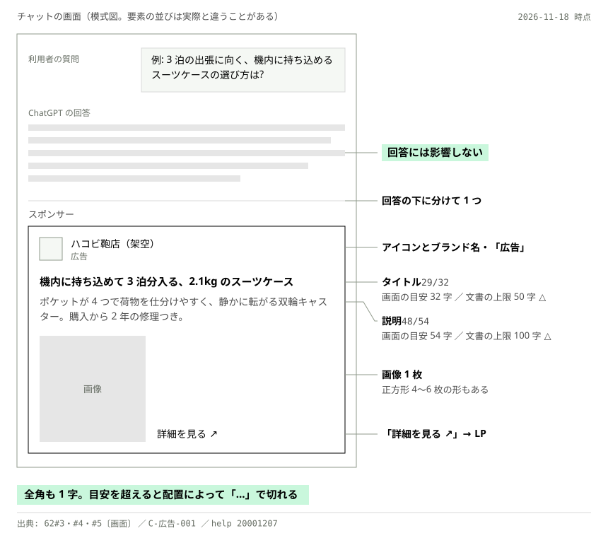
C01広告が出る場所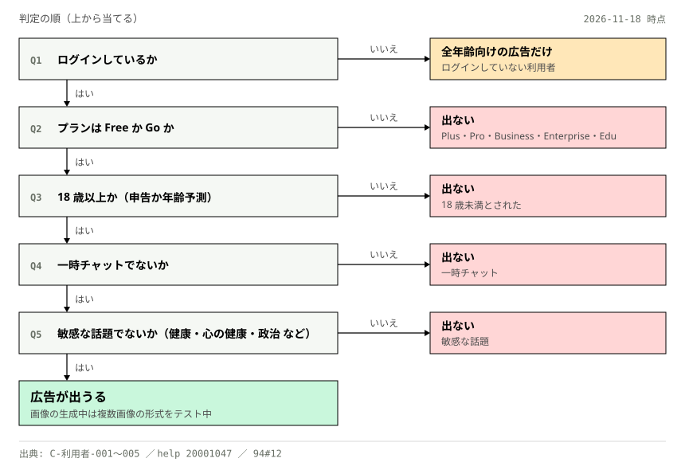
C02誰に広告が出るか C03目的と課金
C03目的と課金 C04入札の移行の年表
C04入札の移行の年表 C05予算の 7 日平均
C05予算の 7 日平均 C06計測の流れ
C06計測の流れ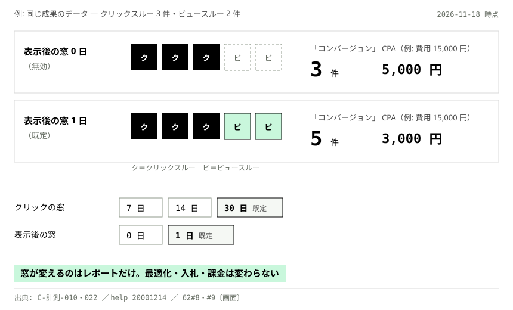
C07ビュースルーの窓 C08日本で出せる業種
C08日本で出せる業種 C092026 年の年表
C092026 年の年表 C10文脈ヒントとキーワードの違い
C10文脈ヒントとキーワードの違い C11ターゲティングの範囲
C11ターゲティングの範囲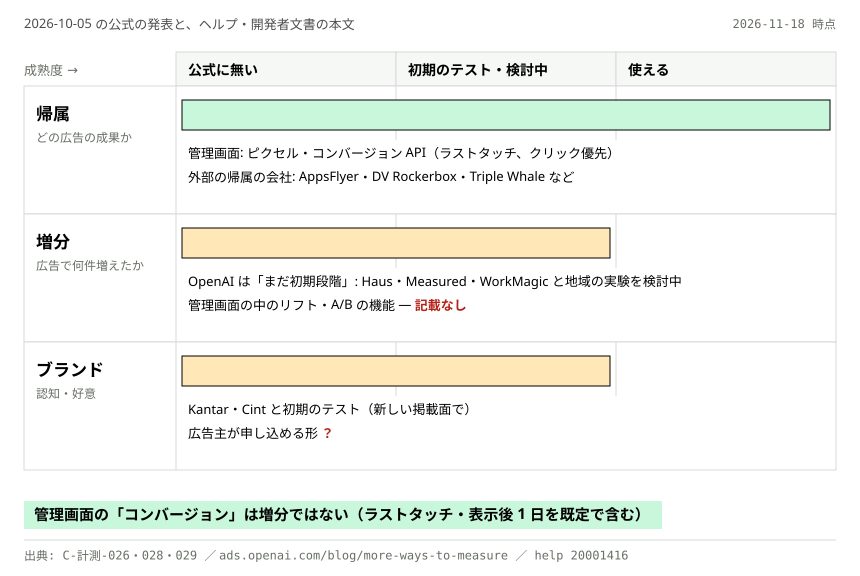
C12効果測定で今できること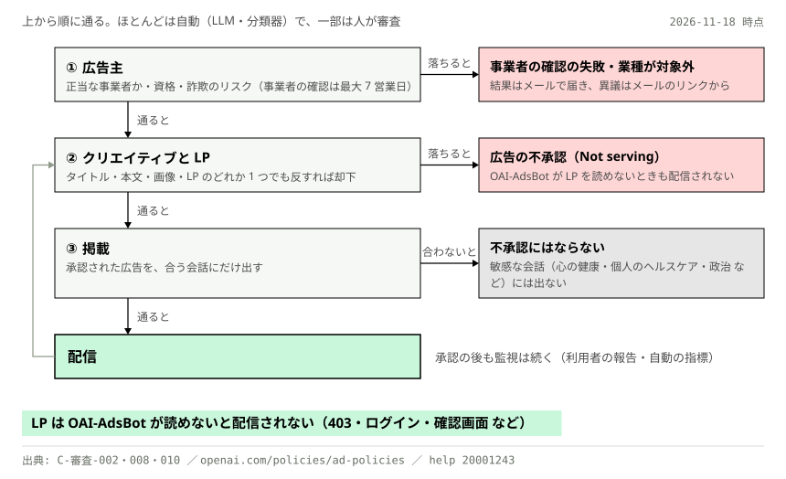
C13審査の 3 層 C14却下されたとき
C14却下されたとき C15事業者の確認と配信
C15事業者の確認と配信 C16日本の法律と OpenAI のポリシーのどちらで落ちるか
C16日本の法律と OpenAI のポリシーのどちらで落ちるか C17いま言えること・報道だけ・分からないこと
C17いま言えること・報道だけ・分からないこと C18小さく試す立ち上げの 2 段〔当てはめ〕
C18小さく試す立ち上げの 2 段〔当てはめ〕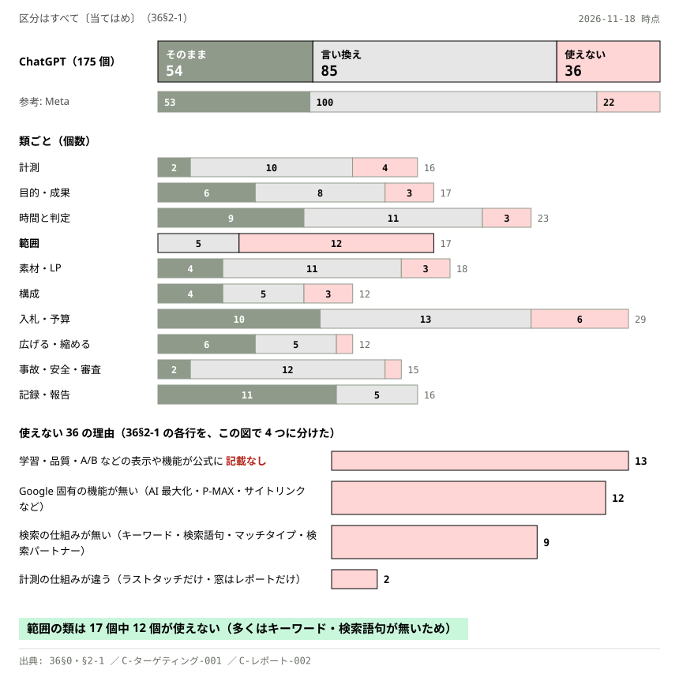
C19運用の型の当てはめ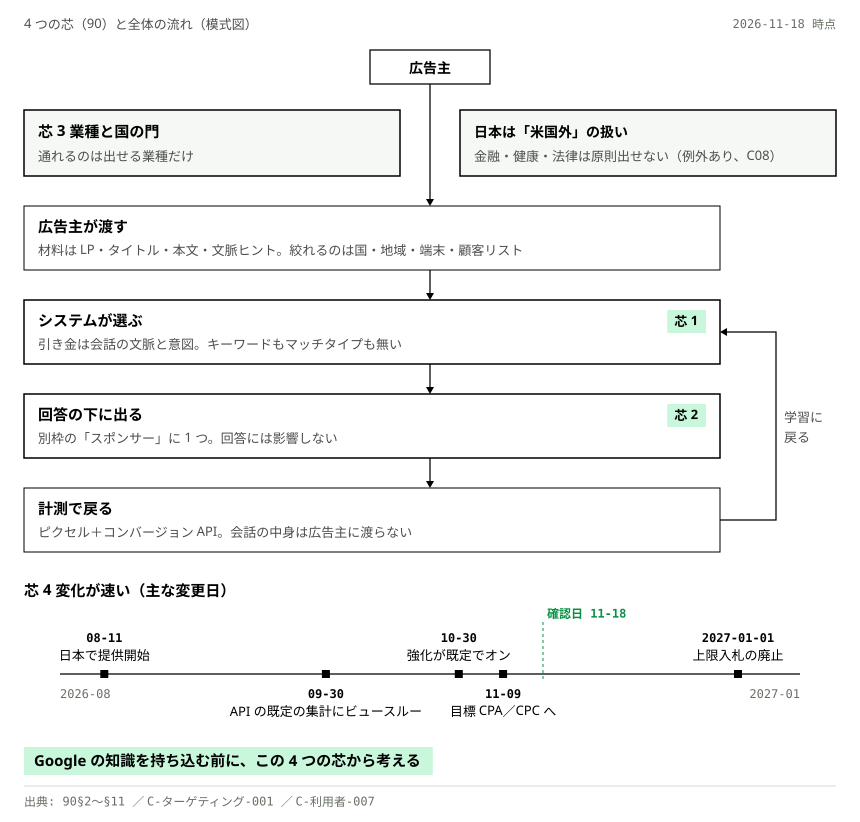
C20ChatGPT の広告の全体の地図 C21裏取りで覆った主張
C21裏取りで覆った主張 C22判断の順序
C22判断の順序 C23Google の常識と ChatGPT の違い
C23Google の常識と ChatGPT の違い C24古い記事の記述といま
C24古い記事の記述といま C25クリエイティブの強化の仕組みと止め方
C25クリエイティブの強化の仕組みと止め方 C263 つの名前と、変えたとき
C263 つの名前と、変えたとき C27最低の予算で月に何件か
C27最低の予算で月に何件か C28差を見分けるのにかかる期間
C28差を見分けるのにかかる期間 C29強化で法の点検の外に出る道
C29強化で法の点検の外に出る道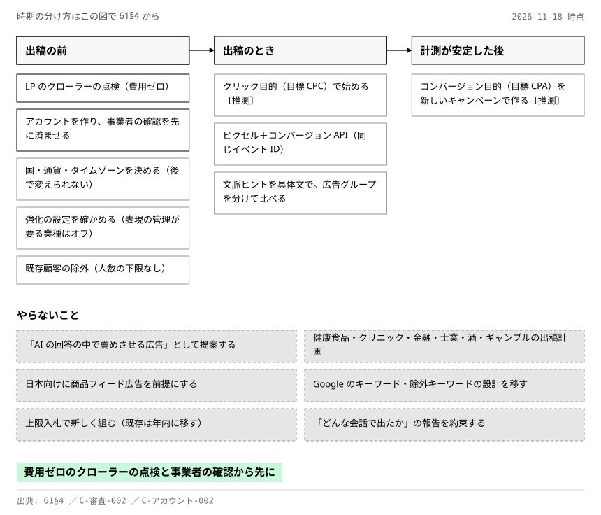
C30日本の運用者が今やれること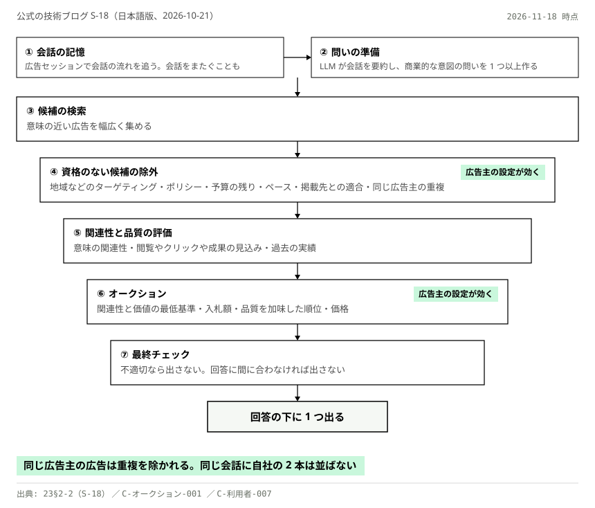
C31広告が選ばれる 7 段 C32アカウントの階層
C32アカウントの階層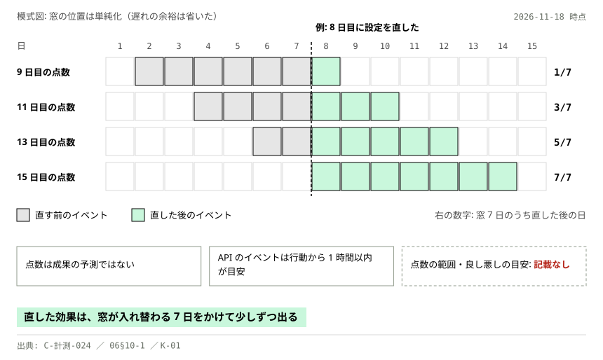
C33イベントの品質スコアの 7 日の窓媒体
範囲
テーマ × 媒体
Google 以外の印は、Google のメモと同じ番号のメモがあるかで自動に付けています（◎ 厚い・○ ある・△ 全体像だけ）。マスに指を置くと元のファイルが出ます。
| テーマ | Meta | LINEヤフー | ChatGPT | Microsoft | Amazon | TikTok | X | SmartNews | ||
|---|---|---|---|---|---|---|---|---|---|---|
| 基本と仕組み | 厚い | 厚い | 厚い | 厚い | — | — | — | — | — | — |
| 戦略と計画 | 厚い | — | — | — | — | — | — | — | — | — |
| アカウントと構成 | 厚い | — | 厚い | — | — | — | — | — | — | — |
| 入札と予算 | 厚い | 厚い | 厚い | ある | — | — | — | — | — | — |
| ターゲティング | 厚い | 厚い | 厚い | ある | — | — | — | — | — | — |
| 広告文とクリエイティブ | 厚い | — | — | ある | — | — | — | — | — | — |
| データフィード | 薄い | — | — | — | — | — | — | — | — | — |
| LP | 厚い | — | — | — | — | — | — | — | — | — |
| 計測 | 厚い | 厚い | 厚い | 厚い | — | — | — | — | — | — |
| 分析と効果測定 | 厚い | ある | — | ある | — | — | — | — | — | — |
| 運用の型 | 厚い | 厚い | 厚い | 厚い | — | — | — | — | — | — |
| 法規と審査 | ある | 厚い | 厚い | 厚い | — | — | — | — | — | — |
| 用語 | 厚い | — | — | — | — | — | — | — | — | — |
| 自動化 | 対象外 | 対象外 | 対象外 | 対象外 | 対象外 | 対象外 | 対象外 | 対象外 | 対象外 | 対象外 |